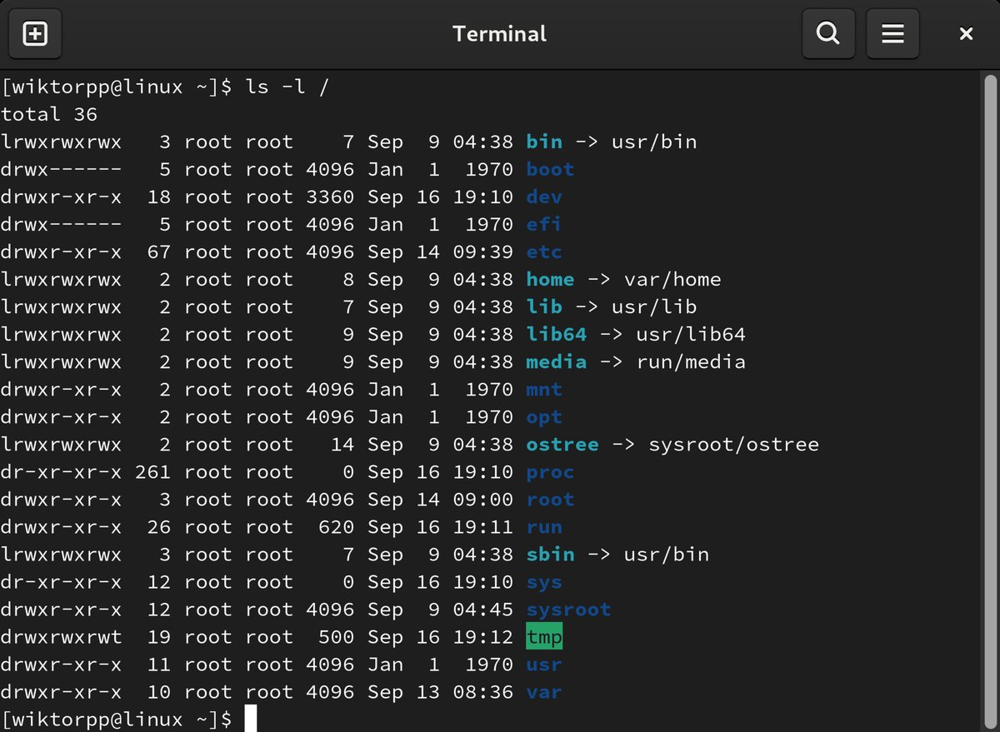
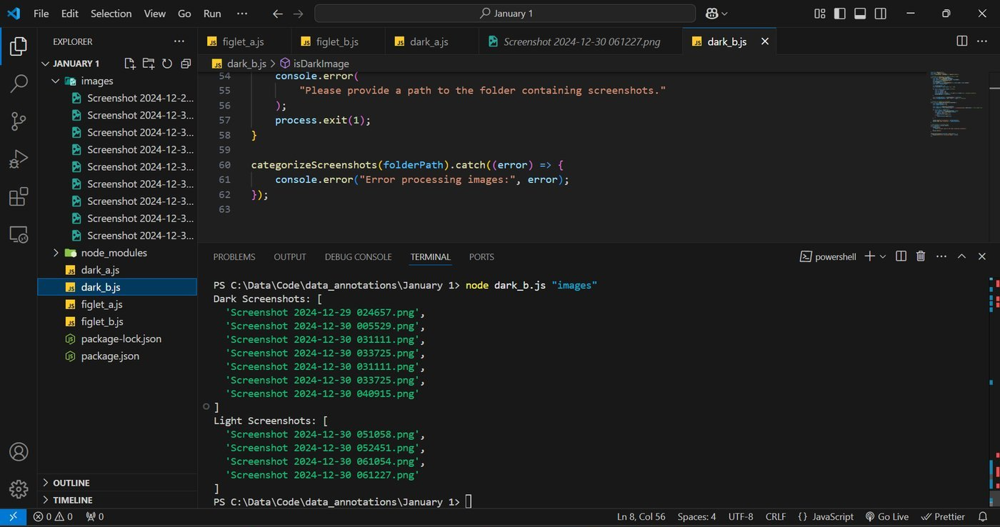
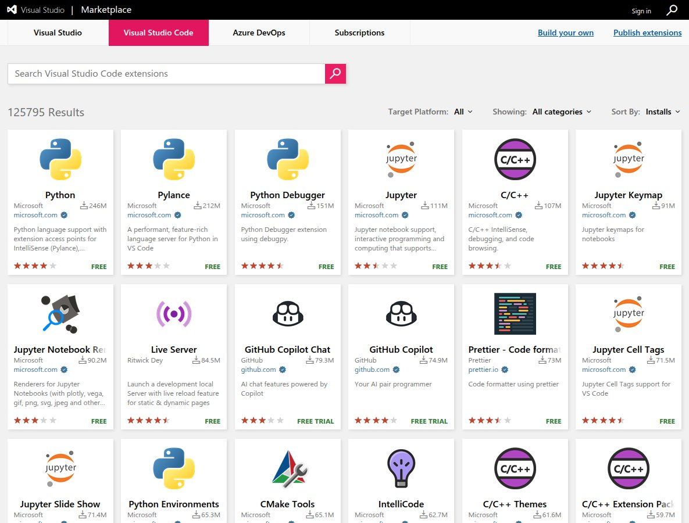
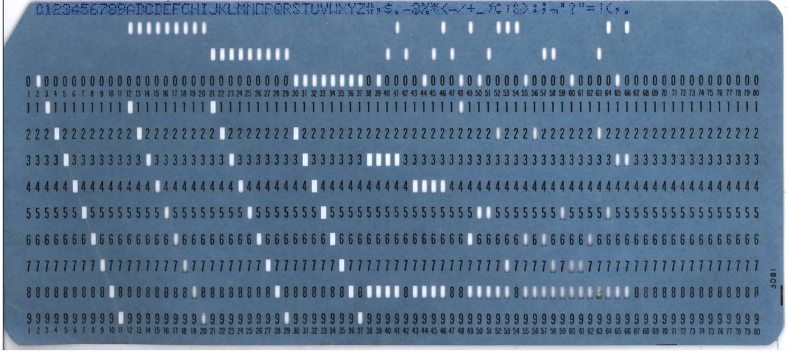
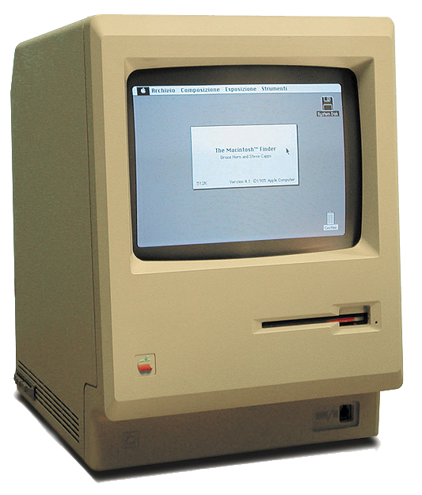
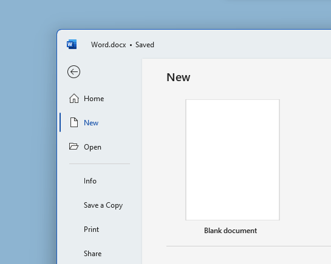
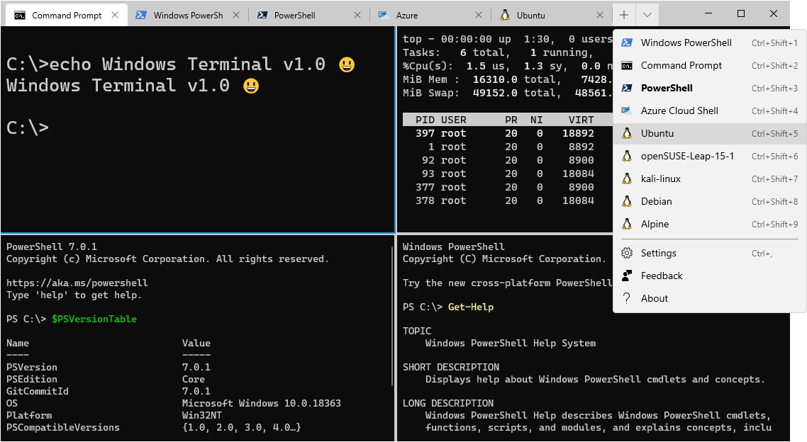
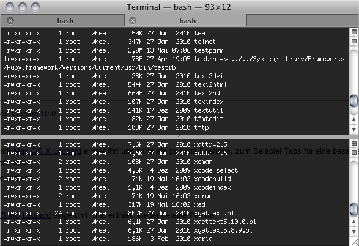
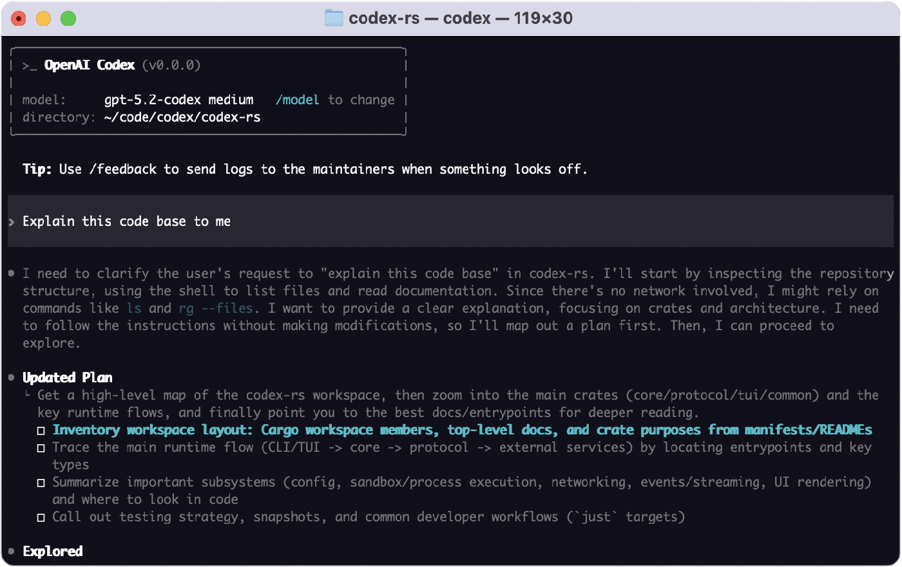

AI 문맹탈출을 위한 기본 도구 익히기 · 1강
개발자의 공구함부터, AI가 직접 일하는 검은 창까지
$ claude
전체 흐름
작업대를 마련합니다.
AI가 내 컴퓨터에서 직접 일하는 곳
AI와 나누는 공용어를 배웁니다.
사람도 AI도 읽기 쉬운 글쓰기
기록 보관소를 만듭니다.
모든 변경을 저장하고 함께 일하기
목표는 개발자가 되는 것이 아닙니다. AI에게 일을 맡길 줄 아는 사람이 되는 것입니다.

GNOME Terminal 화면 · The GNOME Team, GPLv3 · Wikimedia Commons아이스 브레이킹
이런 화면,
어디서 보셨나요?
오늘이 끝나면 이 창이 AI 비서를 부르는 창으로 보일 거예요.
Part 1
개발자들은 어떤 도구로 일해 왔을까?
먼저, 코딩이란?
사진들 = 폴더("바탕화면").사진_목록()
for 사진 in 사진들:
날짜 = 사진.찍은_날짜
사진.옮기기(날짜 + " 폴더")
이해를 돕기 위해 한글로 쓴 흉내 코드입니다.
코드도 결국 글자입니다. 그래서 메모장으로도 쓸 수 있어요. 그런데 왜 전용 도구를 쓸까요?
비유로 이해하기
코드도 똑같습니다. 오타를 잡아주고, 실행해 보고, 파일을 정리해 주는 코딩 전용 만능 도구가 필요했죠. 그게 바로 IDE입니다.
IDE란?
코드를 쓰는 곳
= 도마와 칼
재료 정리
= 냉장고
만든 걸 돌려보기
= 가스레인지
오류 찾기
= 간 보기
명령 내리기
= 주방 인터폰
따로따로 있던 도구를 한 화면에 모아서 왔다 갔다 하지 않게 만든 것이 IDE입니다.
대표 IDE · VS Code 둘러보기

1 2 3 4 5IDE의 종류
| 이름 | 만든 곳 | 특징 |
|---|---|---|
| VS Code | 마이크로소프트 | 무료 · 가볍고 확장이 많음 · 개발자 설문 수년째 1위 (2024년 약 74% 사용) |
| IntelliJ · PyCharm | JetBrains | 자바 · 파이썬 전문가용, 기능이 아주 많음 |
| Visual Studio | 마이크로소프트 | 윈도우 프로그램 · 게임 개발에 강함 |
| Xcode | 애플 | 아이폰 · 맥 앱을 만들 때 필수 |
| Android Studio | 구글 | 안드로이드 앱 개발용 |
| Cursor · Windsurf | AI 스타트업 | VS Code를 바탕으로 AI 기능을 깊게 넣은 IDE |
사용 비율 출처: Stack Overflow 개발자 설문 2024
확장 프로그램
폰을 처음 사면 기본 앱뿐이지만, 앱스토어에서 원하는 앱을 깔아 내 폰을 만들죠. IDE도 확장 프로그램(Extension)으로 키웁니다.

VS Code Marketplace 화면 (2026년 11월 캡처) · 12만 개가 넘는 확장이 있음그런데 요즘은…
사람이 문법을 외워서 한 줄 한 줄 직접 씁니다.
for (let i = 0; i < photos.length; i++) {
const d = getDate(photos[i]);
move(photos[i], d);
}
원하는 것을 말로 설명하면 AI가 코드를 씁니다. 사람은 결과를 보고 "좋아", "여기 고쳐줘"라고 합니다.
2025년 초 AI 연구자 안드레이 카파시가 처음 쓴 말로, 그해 콜린스 사전 '올해의 단어'로 뽑혔어요.
흐름의 변화
IDE는 여전히 쓰지만,
요즘 개발의 무대는 터미널로
옮겨 가고 있습니다
그럼 터미널이 대체 뭘까요?
Part 2
GUI와 CLI, 두 가지 대화 방식
짧은 역사

카드에 구멍을 뚫어 명령을 전달. 한 장에 한 줄.
키보드로 명령어를 쳐서 대화. 터미널의 시작.

매킨토시, 윈도우. 아이콘을 클릭해서 대화.
평소 말투로 부탁하면 AI가 알아서 처리.
천공 카드: 퍼블릭 도메인 · 에니악(ENIAC) 사진: 미 육군, 퍼블릭 도메인 · 매킨토시 128K: Grm wnr, CC BY-SA 3.0 · 모두 Wikimedia Commons
GUI
아이콘, 버튼, 창, 메뉴를 눈으로 보고 마우스로 눌러서 쓰는 방식이에요.
처음 보는 사람도 눈치껏 쓸 수 있다는 게 가장 큰 장점

Microsoft Word 화면 · Wikimedia Commons, CC BY-SA 4.0CLI
메뉴판 사진을 넘겨 보고, 손가락으로 "이거요" 하고 가리킵니다.
쉽지만, 메뉴판에 없는 건 시킬 수 없어요.
메뉴판 없이 한마디. "늘 먹던 걸로, 맵게, 곱빼기!"
말을 알아야 하지만, 빠르고 원하는 대로 시킬 수 있어요.
~ $ mkdir 여행사진 # "여행사진" 폴더를 만들어 ~ $ ls # 여기 뭐가 있는지 보여줘 문서 다운로드 바탕화면 여행사진
같은 일, 두 가지 방법
$ ls *.jpg | cat -n | while read n f; do mv "$f" "제주_$(printf %03d $n).jpg"; done
명령 한 줄이면 끝. 요즘은 이 한 줄조차 AI가 대신 써 줍니다.
터미널이란?
내가 글자로 말하면(명령어), 컴퓨터가 글자로 답합니다(결과). 채팅방과 똑같은 구조예요.
터미널은 창이고, 내 말을 알아듣고 처리하는 건 셸이에요. PowerShell, zsh, bash 같은 이름을 보게 될 거예요.
jay@노트북 ~/문서 $ pwd /Users/jay/문서 ↑ 누가@어느컴퓨터 ↑ 지금 위치 ↑ 여기에 명령을 입력 (프롬프트)

Windows Terminal 화면 · Microsoft, MIT 라이선스 · Wikimedia Commons🪟 윈도우의 터미널
| 이름 | 설명 |
|---|---|
| Windows 터미널 | 윈도우 11 기본 탑재. 여러 셸을 탭으로 |
| PowerShell | 지금 윈도우의 기본 셸 |
| 명령 프롬프트(cmd) | 오래된 셸. 검은 창의 원조 |
| WSL | 윈도우 안에서 리눅스를 쓰는 기능 |
여는 법: 시작 버튼을 오른쪽 클릭 → 터미널
또는 ⊞ Win 누르고 "터미널" 검색
🍎 맥의 터미널
| 이름 | 설명 |
|---|---|
| 터미널(Terminal) | 맥 기본 앱. 응용 프로그램 › 유틸리티 |
| iTerm2 | 가장 유명한 무료 대체 터미널 |
| Ghostty · Warp | 빠르고 예쁜 요즘 터미널 |
| zsh | 맥의 기본 셸 |
여는 법: ⌘ Cmd + Space 누르고 "터미널" 입력 후 엔터
VS Code 같은 IDE 안에도 터미널이 들어 있어요. 어느 것을 써도 같은 일을 합니다.

macOS Terminal 화면 · Wikimedia Commons (Copyrighted free use)따라 해 보기
| 명령어 | 뜻 | 비유 |
|---|---|---|
pwd | 지금 어디? | 📍 지도 앱 '내 위치' |
ls | 여기 뭐 있어? | 👀 방 안 둘러보기 |
cd 폴더 | 그리로 가 | 🚪 방 옮기기 |
mkdir 이름 | 폴더 만들어 | 📦 새 상자 놓기 |
clear | 화면 지워 | 🧽 칠판 지우기 |
~ $ pwd /Users/jay ~ $ mkdir ai연습 ~ $ cd ai연습 ~/ai연습 $ pwd /Users/jay/ai연습 ~/ai연습 $ cd .. # 한 칸 위로
윈도우 PowerShell, 맥 터미널 모두 위 명령어가 그대로 됩니다. 이 정도만 알면 나머지는 AI에게 시키면 돼요.
Part 3
GUI 앱과 CLI 도구의 차이
GUI의 그림자
버튼, 그림, 애니메이션을 계속 그려야 해서 컴퓨터 자원을 많이 씁니다.
윈도우용, 맥용, 아이폰용, 안드로이드용… 화면을 기기마다 따로 개발해야 해요.
만든 사람이 넣어 둔 버튼만 누를 수 있어요. 패키지 여행처럼 편하지만 코스가 정해져 있죠.
그래서 새 AI 기능은 보통 CLI(터미널) 버전에 먼저 나오고, GUI 앱에는 나중에 들어옵니다.
CLI의 힘
비교
ChatGPT · Claude 웹/앱
Claude Code · Codex CLI · Gemini CLI
같은 AI라도 어디에서 쓰느냐에 따라 할 수 있는 일이 완전히 달라집니다.
대표적인 터미널 AI
| 이름 | 만든 곳 |
|---|---|
| Claude Code | Anthropic (Claude) |
| Codex CLI | OpenAI (ChatGPT) |
| Gemini CLI | Google (Gemini) |
모두 터미널에서 한 단어로 부릅니다.
~/ai연습 $ claude # 또는 codex
설치 방법은 바뀔 수 있으니 각 회사의 공식 안내 페이지를 따라 하세요.

Codex CLI 실행 화면 · OpenAI, Apache 2.0 · Wikimedia Commons이런 식으로 일합니다
> 바탕화면에 흩어진 사진들을 찍은 날짜별 폴더로 정리해줘 ● 바탕화면을 살펴볼게요. ls ~/바탕화면 → 사진 128장, 문서 14개를 찾았어요. ● 사진의 촬영 날짜를 읽어서 계획을 세웠어요. 2024-03 (21장), 2024-07 제주 (54장), 2024-12 (53장) … 총 12개 폴더 ● 이 명령을 실행해도 될까요? mkdir … ; mv … ❯ 1. 예 2. 아니요, 다르게 해줘 ● 완료했어요. 사진 128장을 12개 폴더로 옮겼고, 문서는 그대로 두었어요.
사람은 목표를 말하고, 확인하고, 허락합니다. 손이 가는 일은 AI가 해요.
그럼 IDE는 필요 없나요?
사람이 IDE 화면을 보며 파일을 열고, 고치고, 실행하고, 오류를 찾았습니다.
AI가 내 컴퓨터를 직접 보고 직접 고칩니다. 사람은 방향을 정하고 결과를 확인해요.
에이전트란?
올 때마다 처음부터 설명해야 해요. 어제 무슨 일을 했는지 모릅니다.
= 대화창을 닫으면 잊어버리는 챗봇
출근하면 업무 노트부터 읽고, 하던 일을 이어서 합니다. 스스로 계획하고 도구를 써요.
= 작업 공간에 메모를 남기는 에이전트
터미널 AI는 작업 폴더에 CLAUDE.md 같은 메모 파일을 두고, 켤 때마다 읽어서 언제든 이전 작업을 이어 갑니다.
에이전트의 업무 노트
# 독서 블로그 프로젝트 ## 지금까지 한 일 - 메인 페이지 완성 (11/10) - 책 12권 소개글 올림 ## 규칙 - 글은 **존댓말**로 쓴다 - 사진은 `img/` 폴더에 넣는다 ## 다음 할 일 - [ ] 태그별 모아보기 만들기
#, -, ** 같은 기호가 보이나요? 이게 마크다운이에요. 2강에서 배웁니다.
처음 쓸 때 안전 수칙
ai연습처럼 빈 폴더를 만들고 그 안에서만 AI를 켜세요.오늘의 핵심
터미널에 AI를 설치했다면
이미 에이전틱 AI 사용자로
한 발자국 내디딘 것입니다
AI가 내 컴퓨터에서 직접 일하고, 메모를 남기며, 다음에도 이어서 일할 수 있는 환경을 갖췄으니까요.
용어 정리
| 용어 | 한 줄 뜻 |
|---|---|
| IDE | 코딩에 필요한 도구를 한 곳에 모은 프로그램 (예: VS Code) |
| 확장 프로그램 | IDE에 기능을 더하는 앱 같은 것 |
| GUI | 그림·버튼을 마우스로 누르는 화면 방식 |
| CLI | 글자로 명령을 입력하는 방식 |
| 터미널 | CLI로 컴퓨터와 대화하는 창 |
| 셸 | 터미널 안에서 명령을 알아듣는 프로그램 (PowerShell, zsh) |
| 바이브 코딩 | 말로 설명하면 AI가 코드를 쓰는 방식 |
| 에이전트 | 스스로 계획·실행·확인하고, 메모로 작업을 이어 가는 AI |
이번 주 해 볼 것
pwd → mkdir ai연습 → cd ai연습 → ls → clear막히면 오류 메시지를 그대로 복사해서 ChatGPT나 Claude에게 물어보세요. 그것도 훌륭한 연습입니다.
다음 시간 예고 · 2강
기호 몇 개로 글에 힘을 싣고, 생각을 연결해 쌓는 법